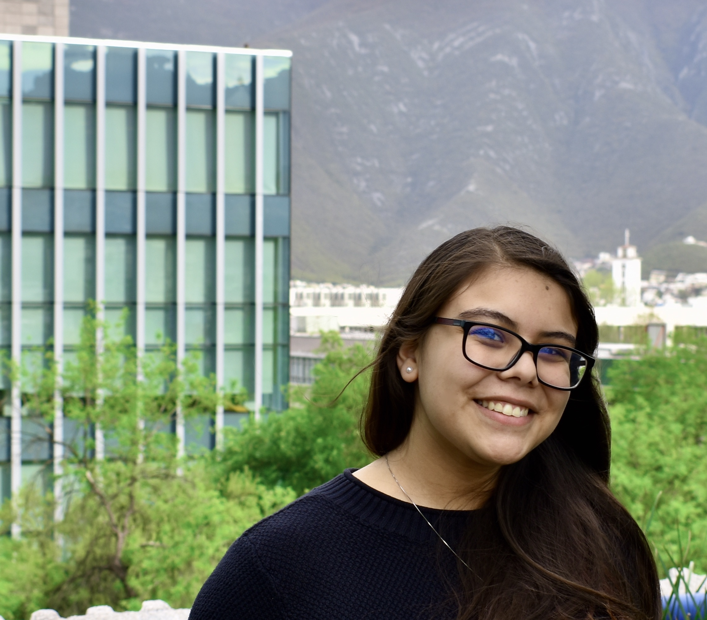

Cosas sobre mí y el Tec
Secundaria
- Soy alumna del Tec desde la Secundaria
Generales
- Ya me quiero regresar al campus
- Mi materia favorita es Matemáticas Discretas
Con motivo de los 77 años del Tec,
quiero recordar mis experiencias dentro de la institución
Nos faltaron los chilaquiles
Por: Nadia Garcia 